Committed before left, final after right. 300 mm to110 mm per-lead display estimate; both6mm diameter. Each pair shares body scale. Human visual acceptance pending.
front-25 / front / fullfront-25 / front / detailfront-25 / side / full
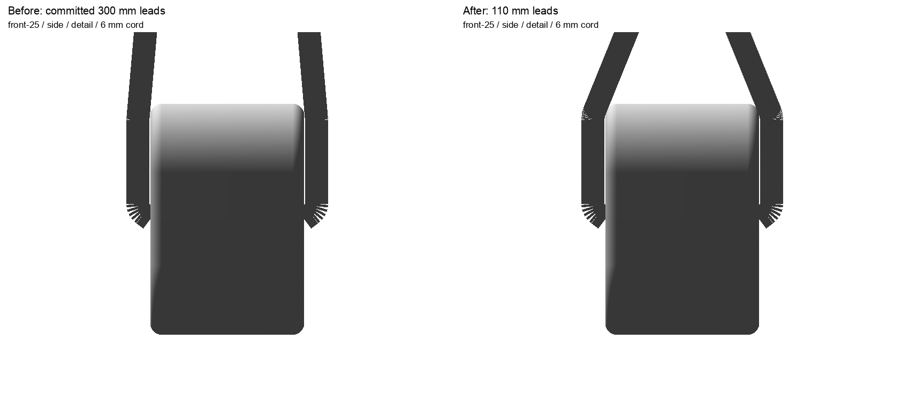
front-25 / side / detail
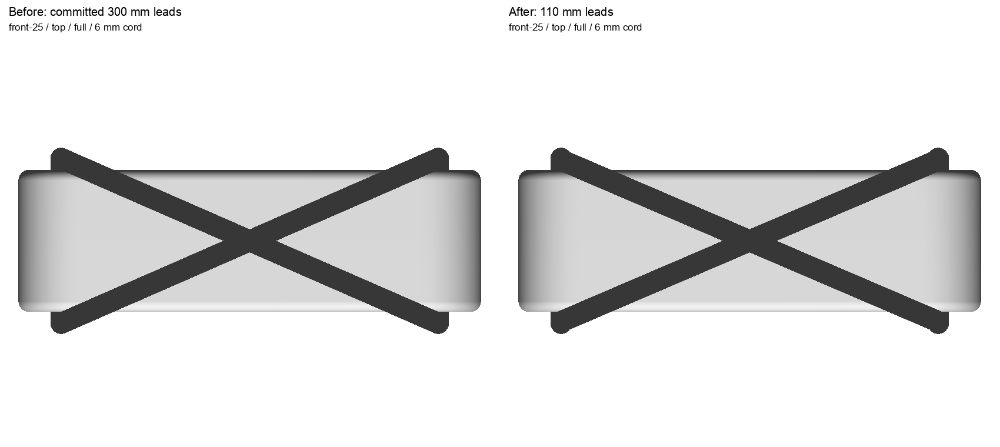
front-25 / top / fullfront-25 / top / detail
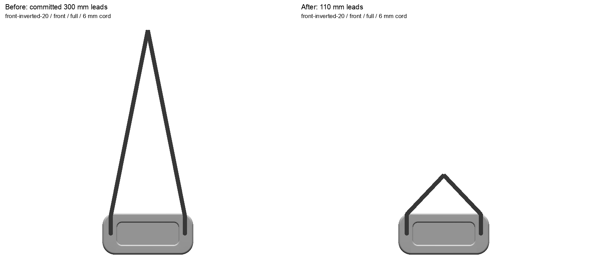
front-inverted-20 / front / fullfront-inverted-20 / front / detailfront-inverted-20 / side / fullfront-inverted-20 / side / detailfront-inverted-20 / top / full
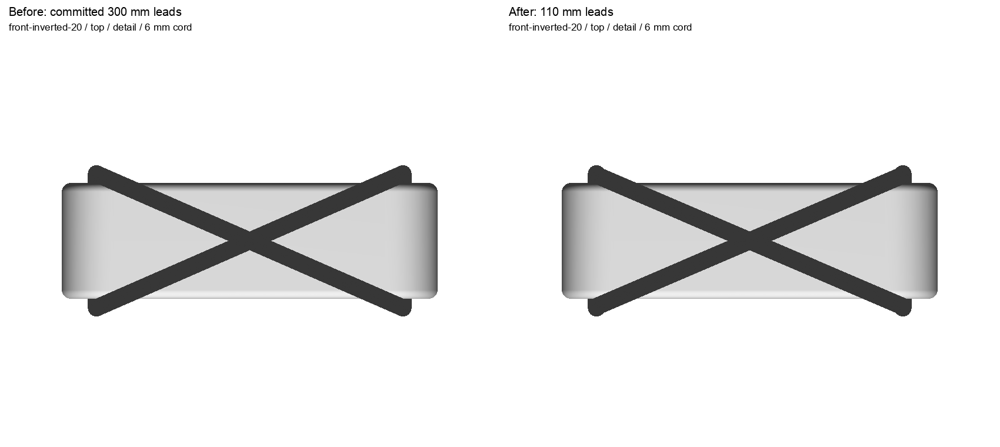
front-inverted-20 / top / detailreverse-13 / front / fullreverse-13 / front / detail
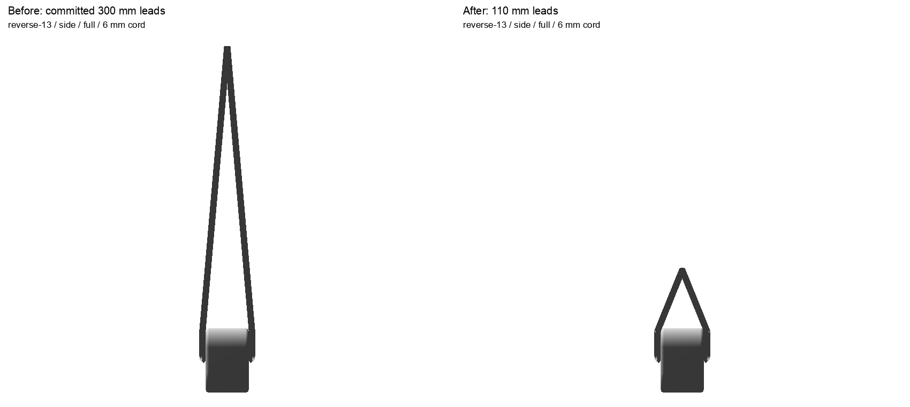
reverse-13 / side / fullreverse-13 / side / detailreverse-13 / top / full
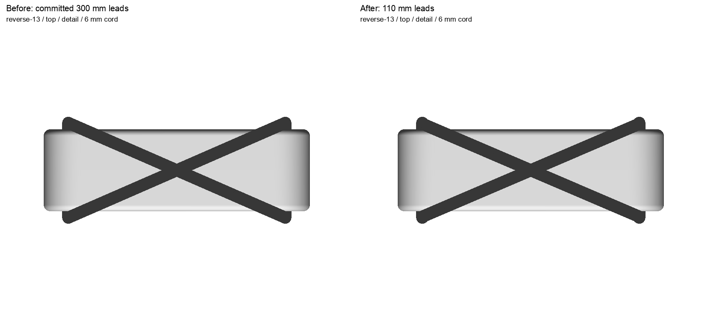
reverse-13 / top / detailreverse-inverted-8 / front / full
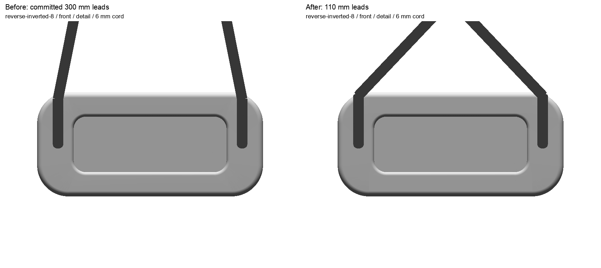
reverse-inverted-8 / front / detail
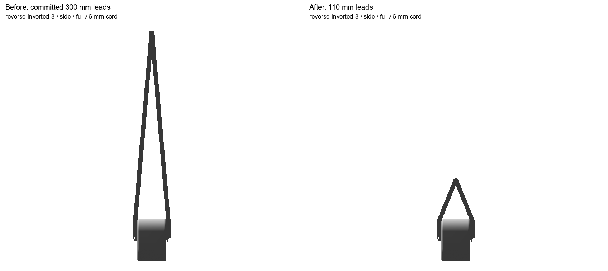
reverse-inverted-8 / side / full
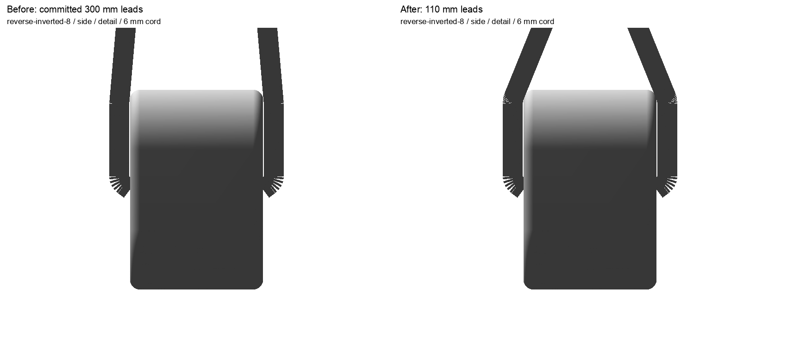
reverse-inverted-8 / side / detailreverse-inverted-8 / top / full
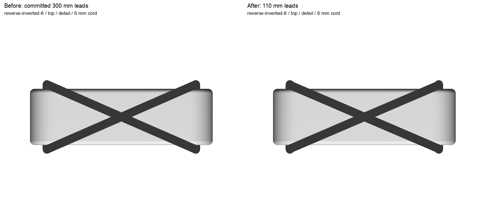
reverse-inverted-8 / top / detailouter-upper / front / full
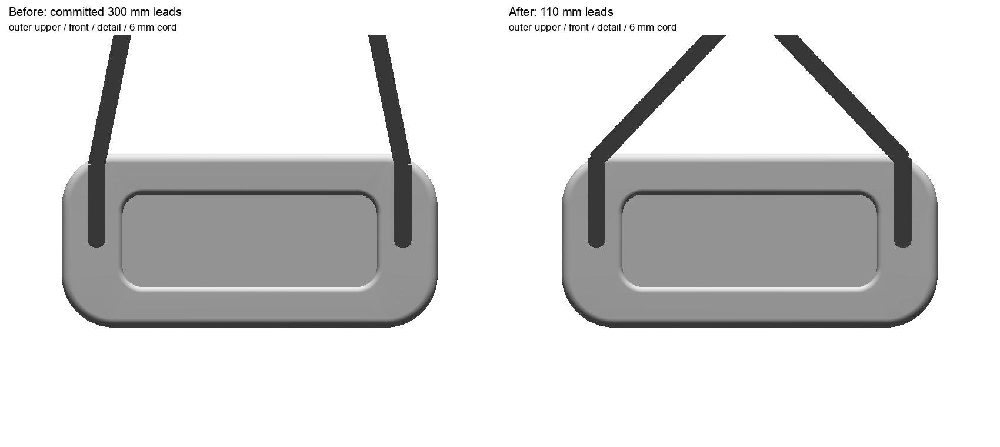
outer-upper / front / detailouter-upper / side / fullouter-upper / side / detailouter-upper / top / fullouter-upper / top / detailouter-lower / front / fullouter-lower / front / detailouter-lower / side / fullouter-lower / side / detailouter-lower / top / fullouter-lower / top / detail